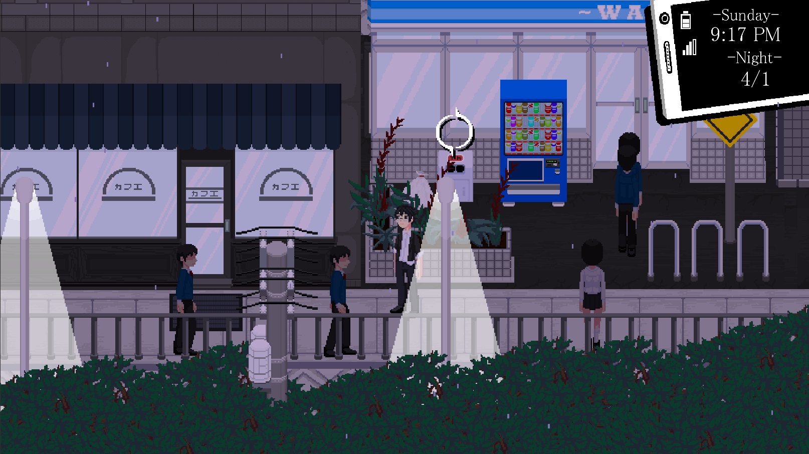

Rainfall Dev Blog #1: Jan 2017 - Feb 2018
From January 2017 until February 2018, the focus of development efforts was on the creation of the vertical slice of “Rainfall ~ Do You Still Like This World”. The goal was to be able to come up with the MVPs of all of the major features of our game as well as having a complete game loop. Everything that we worked on boiled down to three main aspects:
Locations
Our game, at its essence, is designed to remind us of our time spent wandering the streets of Tokyo neighborhoods at night. The feeling of comfiness of the city lights and coffee shops, the smoke and laughs of the izakayas, hanging out at the park, and spending time with friends in the arcades. We want to capture the everyday life in both its fun and mundane moments.
Iriya is the main area of the game that contains the Player’s Apartment and a variety of areas. It’s designed to be chaotic with five main areas meant to contrast against one another. The area composed of the Player’s Apartment and the Park is supposed to be fairly isolated with a couple of people walking around but not meant to be a place for people to hang out. It should feel like it’s in a back alley where people pass through during the day and at night only the locals are in the area.
The area directly east of the apartment is a congested side street with only one way to move and the crowd walking past in both directions. The trees from the park area overflows over the railings of the boundaries of the area. In the background, buildings emerge out of the forest and tower over the area as well.
The north side of the map is a metropolitan influenced area. Large, open spaces littered with skyscrapers and people wandering around. There’s alleyways with small shops hidden behind larger structures. All of the buildings are explorable and have both people and events to interact with.

The school area is designed to be a prestigious art high school serving as a preparatory academy for an associated college. As such it is designed to resemble both real life art academy’s architecture with the obvious anime influence. The school has a slight prison influence with glass walls lining the campus and being placed along a river surrounded by water on all sides.
Lockon Acknowledge and the Calendar System
The game uses an Active Social System, where social interaction and dialogue evolve from turn-based to real-time events. The goal is to provide contextual and dynamic opportunities with interacting with NPCs and the environment. Gathering rumors reveals new chat options, ignoring characters may change their reactions, and deciding how and where you interact with characters will affect how they view you. It's not just what you say, but what you do that decides the outcome.
The first system that supports this is our concept of Lockon Acknowledge. In our game the eye symbol floats above points of interest and interactable objects. An unfocused eye represents passing interest in something which may trigger a thought or nothing at all. However, when you focus on an object you enter a hard lock state that represents attentive focus. Once in this state you can leave it by focusing on another object, walking away, having your attention forced away, etc.
By playing with states of focus NPCs will react differently. For example, If someone is talking to you about an important topic and you decide to focus your attention elsewhere, they will become annoyed with you and respond differently. The absence of choice in conversation will also trigger events. If you are talking to a waitress about what to order and just remain silent she may get creeped out and just go away.
To support this, a node-based scene system known as our Screenplay is used to build up a knowledge base of events for a situation and dynamically generating how a scene could play out based off of your actions similar to a Choose Your Own Adventure Novel
All of these events are placed within the game’s calendar system. The player engages with different events for each of the game’s major time chunks: Morning, Afternoon, and Night. Each section for each day is filled with a variety of main storyline and optional events. Some NPCs are only available at Night, the school is only open during Morning and Afternoon, and your friend may not want to grab lunch on Monday Mornings.
Combat
The third focus of our game is sections of dungeon-crawling action combat. Our character is meant to fulfill the rogue archetype. Hyper fast gameplay with many strikes, frequent dashes, and the avoidance of damage through dodging or clearing projectiles. The dash in our game is short and fast but offers no invincibility frames. It’s meant to get out of a bad situation or to offer better positioning for your own attacks.
All of your attacks fill up a bar leading to your “Chuuni Move” an attack that offers invincibility frames and an intensely powerful area of effect attack to clear the area of projectiles and enemies.
The first dungeon of our game takes place in the tutorial section and is designed to be a distortion of Iriya as if it was reimagined as a ruined temple. The foliage is overgrown everywhere but built on top of the mossed and fallen out buildings is another city. Each area of the city is connected by above-ground trains that journey through different parts of the destroyed world. All of the humans are gone and turned to stone. Only enemies roam the streets.
Each dungeon is also capped off with a boss encounter with some having mini-bosses throughout. The dungeon itself is themed after the boss’s perception of the world and influences of the boss’s design can be found in the enemies and environment
What's Next?
Our next major milestone, is to fill in all of the events that make up the Tutorial Arc and the entirety of our first major arc involving the player’s introduction to Mari.
We also want to flesh out some of the other free time activities and give them a visual and gameplay upgrade over the current placeholders.
New areas will include the Ramen Shop, the Hospital, a Gambling Parlor, Mari’s Apartment, and expansion on Iriya.